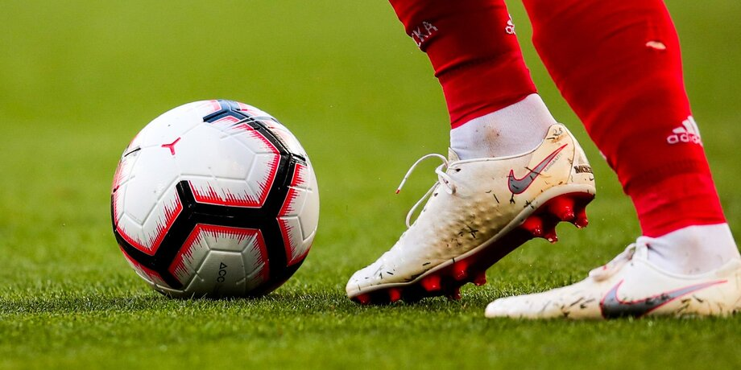

Футбол — командный вид спорта, в котором целью является забить мяч в ворота соперника ногами
или другими частями тела (кроме рук) большее количество раз, чем
команда соперника. В настоящее время самый популярный и массовый вид спорта в мире.
Есть 17 официальных правил игры, каждое из которых содержит список оговорок и руководящих принципов. Эти
правила предназначены для применения на всех уровнях футбола, хотя есть некоторые изменения для таких
групп, как юниоры, взрослые, женщины и люди с ограниченными физическими возможностями. Законы очень
часто формулировались в общих чертах, которые позволяют упростить их применения в зависимости от
характера игры. Правила игры публикуются в ФИФА, но поддерживаются Международным советом футбольных
ассоциаций.